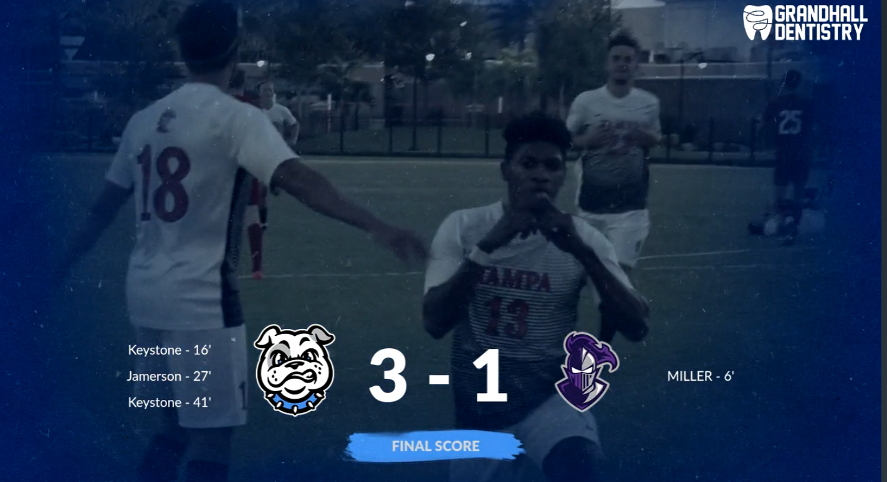
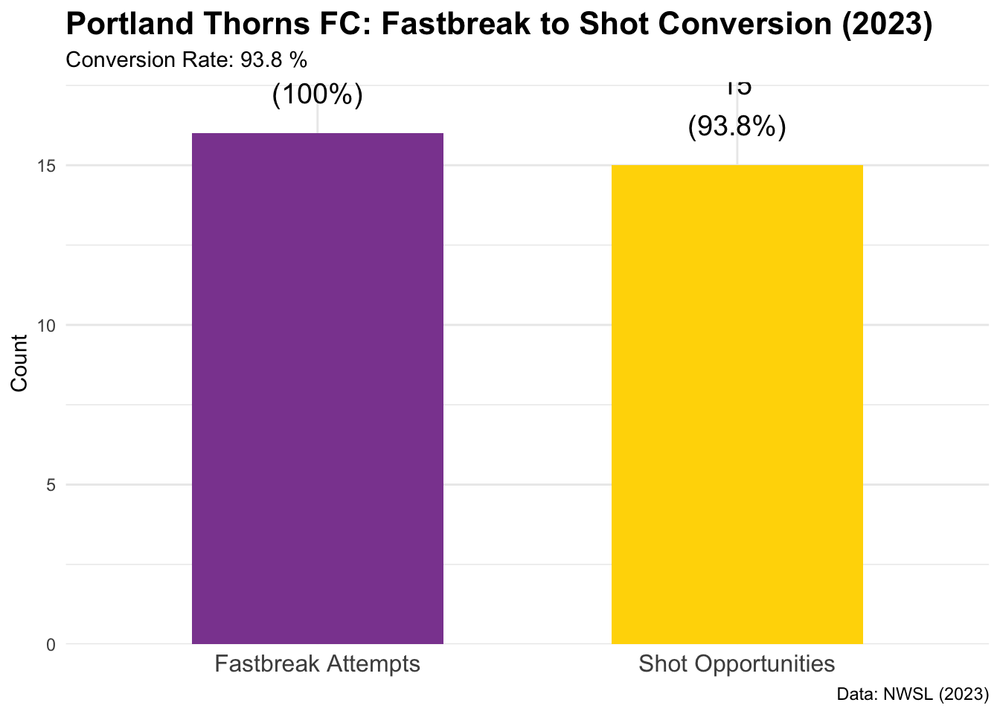
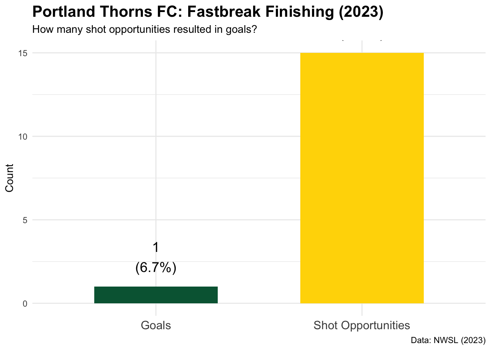
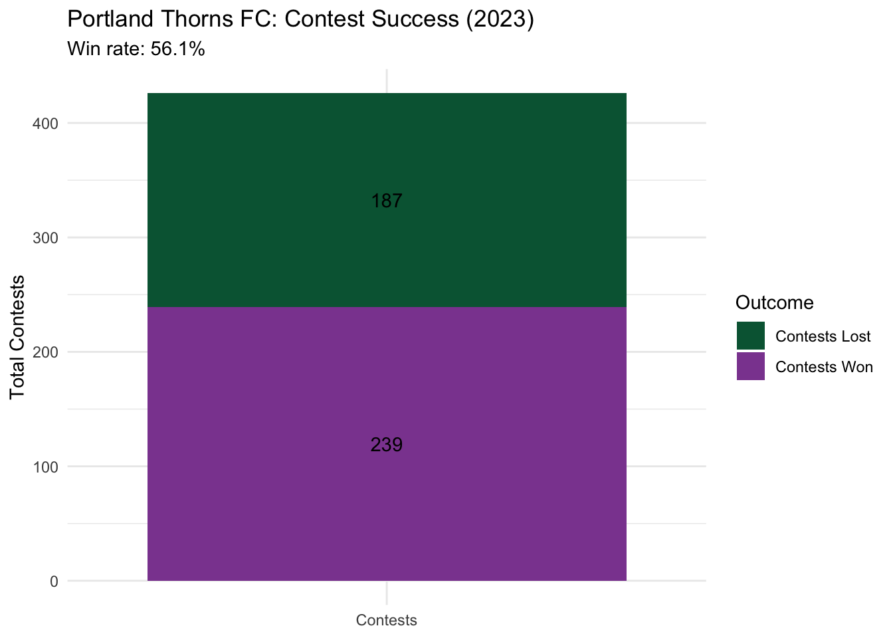
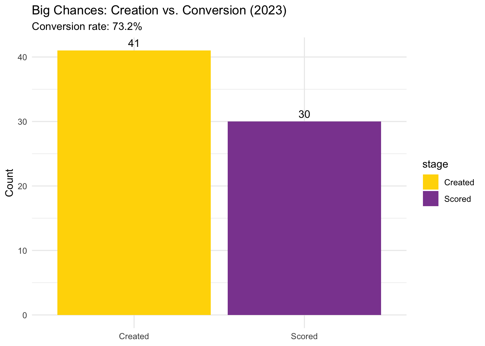

library(tidyverse)
library(viridis)
library(kableExtra)
library(ggridges)
library(scales)
#install.packages("devtools")
devtools::install_github("nwslR/nwslR", ref = "v0.0.0.9002")
library(nwslR)National Women’s Soccer League
Exploring soccer statistics through visualizations
Welcome video
Learning Objectives
In this module, you will be analyzing data from the National Women’s Soccer League (NWSL) season in 2016-22. The goal of this module is to allow students to data wrangle and create data visaulizations out of large data sets to be able to answer research questions for this sport. Data comes in many different forms, and an important part of being a good analyst is knowing what visualizations and analyses are appropriate and will provide insight into the data you have.
Research Questions
During this lab, these are some fo the research questions that you’ll answer.
- How many teams were in the league starting their first season since 2016?
- What is the highest amount of goals a Portland Thorn FC player scored in a match in 2023?
- Which Portland Thorns FC player had the most attempts of fastbreak shots in 2023?
- Is a defensive lineup effective for the Portland Thorns FC team for scoring goals?
- What player_id is the best at winning contests? How did you figured that out?
- Is an offensive lineup effective for Portland Thorns FC for scoring goals?
- Should Portland Thorns FC prioritize offensive or defensive strategies based on their 2023 performance?
Soccer Lingo & Introduction
Before we start working with the data, it is important to understand some of the soccer lingo that will be used throughout this lab. This will help you better understand the data and the visualizations that you will create.
Be the first team to win 3 sets to 25 points!!
 Image source: BoxOut Sports
Totally new to soccer? Watch this 6-minute video: Rules Of Soccer : How to play Soccer : Soccer Rules for Beginners
The basics
- A soccer match is played between two teams, each consisting of 11 players.
- A match consists of two 45-minute halves (plus stoppage time).
- Teams score by getting the ball into the opponent’s goal.
- The team with more goals at full-time wins (or draws if tied).
- Having an offensive lineup means having more players focused on scoring goals (meaning that more of the 11 players are going to be past the midfield trying to help score goals)
- Having a defensive lineup means having more players focused on preventing the opponent from scoring (meaning that more of the 11 players are going to be behind the midfield trying to prevent the rival team from scoring goals).
- Contests refer to the number of times a player challenges an opponent for possession of the ball, either by winning it or losing it.
- A fast break is a quick offensive move where a team attempts to advance the ball rapidly toward the opponent’s goal before the defense can organize itself. This strategy often occurs when the defending team is caught out of position, such as when they have pushed up high and lack depth, making them vulnerable to through balls.
Soccer “stats” that might occur during any given play
- An goal a goal is scored when the ball completely crosses the goal line between the goalposts and beneath the crossbar, resulting in a point for the attacking team.
- A dribble is when a player runs with the ball at their feet, maneuvering it past opponents.)
- An assist is when a player passes or sets the ball to a teammate who attacks the ball for a goal.
- A player roles consists of different positions that players play in the field, such as goalkeeper, defender, midfielder, and forward.
Variable descriptions
The NWSL data contains several variables that are important for understanding the performance of teams and players. Here are some key variables you will encounter:
| Variable | Description |
|---|---|
matches |
information of every match played in every season |
players |
information of each player that played in every team |
teams |
information of every team of NWSL |
team_id |
Unique identifier for the team. |
team_name |
The full official name of the team |
team_name_short |
A shortened or common name for the team |
team_club_name |
The parent club or organization name, if different from the team name |
team_abbreviation |
A standard abbreviation |
first_season |
The first season the team participated in the dataset |
last_season |
The last season the team participated (if inactive) or NULL |
external_team_id |
An identifier from an external system |
last_updated |
Timestamp of when the team’s data was last updated. |
| … | … |
Getting Started (Data Wrangling)
Loading Packages and Data
The first step to any analysis in R is to load necessary packages and data.
By running the following code, you will setup all the libraries and packages that are needed to be able to manage and access the soccer data for this lab.
The nwslR package provides functions to access the National Women’s Soccer League (NWSL) data.
Now that we have the RStudio environment set up, we can load the soccer data so we can start seeing what type of information we are working with. To do this, we are going to create variables by which we are going to assign the data information. (In this case, the variables are called matches, players, teams, and metrics, but you can change the name to whatever makes more sense to you.)
matches <- load_matches()
players <- load_players()
teams <- load_teams()
metrics <- load_metrics()Through those 4 variables, you now have access to all the matches that have been played, all the players, all the teams, and all the metrics that are available for the NWSL. The data is separated in such a way because it becomes much easier to manipulate and analyze the data when it is organized in this way. matches, players, and teams have actual data that you can analyze and manipulate for research questions, while metrics is a list of variables that exists within the data that you can use to analyze the data.
Perfect! Now that everything worked out, use the View() function to be able to see what type of information is available in each variable.
View(matches)
#replace `matches` with `players`, `teams`, and `metrics` to see the other data setsHint. (matches should look somewhat like this)
| team_id | team_name | team_name_short | team_club_name | team_abbreviation | … | |
|---|---|---|---|---|---|---|
| 1 | b8b7m094941l37s57ky5qydje | Boston Breakers | Boston Breakers | Boston Breakers | BOS | … |
| 2 | dzxypx8djih58p668surbi4qm | Chicago Red Stars | Chicago Red Stars | Chicago Red Stars | CHI | … |
| 3 | 84o73tduvg052h5xf8fp1kfpe | FC Kansas City | FC Kansas City | FC Kansas City | KC | … |
| 4 | c3v2ohfuzoqmc8ljm65hi80sj | Houston Dash | Houston Dash | Houston Dash | HOU | … |
| … | … | … | … | … | … | … |
Exercise 1
When you view the ‘matches’ and ‘teams’ data sets, how are the teams identified within ‘matches’ data set? What column variable is used to identify the team within the ‘teams’ data set?
When you view the
metricsdata set and search forfast break, what are the variables that are available to analyze fast breaks?When you view the
playersdata set, how many players are playing in the attacker position?When you view the
teamsdata set, how many teams were in the league starting their first season since 2016?
Loading Portland Thorns FC Matches 2023
Now that we have the data loaded, we need to start manipulating and cleaning the data to narrow down the information we want to analyze.If you notice, the data we have contains all the teams, all the seasons, and all the players, which is not very effective when answering research questions. Hence, for this lab, we are going to narrow down the information to show only the Portland Thorns FC team and their performance in the 2023 season.
Create a variable that contains the id of Portland Thorns FC so we can filter the matches they played in 2023.
portland_thorns_id <- teams %>%
filter(team_name == "Portland Thorns FC") %>%
pull(external_team_id)
#Replace ID_VARIABLE_NAME with the answer for Exercise 1.aNow that you have a variable by which you can refer to the id of the team. Filter the matches data set to only show the match id’s where Portland Thorns FC played.
portland_thorns_matches <- matches %>%
filter((home_team_id == portland_thorns_id | away_team_id == portland_thorns_id) & season == "2023") %>%
pull(match_id)
#Replace the MATCH_ID_NAME with the id of the matches where portland thorns fc played
#You got it right if in your environment you see 'chr [1:23] "portland-thorns-fc..."'Finally, now that you have the match id’s for all the matches that Portland Thorns FC played in 2023, you can load the player match stats and team match stats for those matches.
# Load player stats for all 2023 Portland Thorns matches
all_thorns_player_stats <- map_dfr(
portland_thorns_matches,
~ load_player_match_stats(match_id = .x)
) %>%
filter(team_id == portland_thorns_id)
# Load team stats for all 2023 Portland Thorns matches
team_match_stats <- map_dfr(
portland_thorns_matches,
~ load_team_match_stats(match_id = .x)
) %>%
filter(team_id == portland_thorns_id & period == 'total')
#Load team season stats for Portland Thorns FC performance in 2023
portland_thorns_team_season_stats <- load_team_season_stats(
team_id = "POR",
season = "2023"
)You can use the names() to list the variables that are available in the ‘all_thorns_player_stats’, ‘portland_thorns_team_season_stats’ and ‘team_match_stats’. It makes it easier to see the columns that are available to use for analysis.
Hint. (names(all_thorns_player_stats) should look a bit like this)
[1] "match_id"
[2] "team_id"
[3] "player_id"
[4]"keeper_pick_up"
[5] "long_balls_total"
[6] "accurate_back_zone_pass"
[7] "long_passess_successful"
[8] "shots_conceded_outside_box"
[9] "saves_in_box"
[10] "launches_accurate"
[...] ...
Exercise 2
Based on the column information that you see in the ‘all_thorns_player_stats’ and ‘team_match_stats’, what are some research questions that you could solve?
What are some potential column variables that you could use to determine the defensive or offensive stat of Portland Thorns FC?
What is the total number of goals scored by Portland Thorns FC in 2023?
What is the highest amount of goals a Portland Thorn FC player scored in a match in 2023?
Research Question 1
Now that we have the data. It is time to interpret the information within the tables to answer different research questions.
Research Question 1
Research Question: Is a defensive lineup effective for the Portland Thorns FC team for scoring goals?
When thinking on the effectiveness of a defensive lineup in scoring goals, it all relies in counter fastbreak! What this means is that the Portland Thorns FC will purposefully allow the rival team to have more possession of the ball, forcing the rival team to push and leave their defense weaker as it has less players. Hence, if Portland is able to steal the ball and start a counter fastbreak attack, they will have much better chances to score a goal as there will be less defenders.
A fast break in soccer refers to a quick offensive move where a team attempts to advance the ball rapidly toward the opponent’s goal before the defense can organize itself. This strategy often occurs when the defending team is caught out of position, such as when they have pushed up high and lack depth, making them vulnerable to through balls.The objective is to exploit the space and create scoring opportunities by maintaining possession and moving the ball quickly.
Loading the defensive stats information from Portland Thorns FC
To do this, we are going to need to extract the needed information for all the variables that are relevant regarding Portland Thorns FC being able to do counters. Hence, variables like fastbreaks, possession, shots, goals, etc are relevant.
fastbreak_stats <- all_thorns_player_stats %>%
select(
player_id, match_id, team_id,
contains("fastbreaks"),
contains("shots_fastbreak"),
contains("goals_fastbreak"),
goals, assists, shots_total
)
# Replace VAR1, VAR2, VAR3 with the variables that you think are important to analyze the effectiveness of a defensive lineup. You can also add a comma and add even more variables if you think they are important.Use again the View() function to see the data that you have filtered. You can also use the Names() function to see the variables that are available in the ‘fastbreak_stats’ variable.
Hint. (View(fastbreak) should look a bit like this)
| player_id | match_id | team_id | fastbreaks | shots_fastbreak | … | |
|---|---|---|---|---|---|---|
| 1 | 364 | portland-thorns-fc-vs-orlando-pride-2023-03-26 | 8 | 0 | 0 | … |
| 2 | 205 | portland-thorns-fc-vs-orlando-pride-2023-03-26 | 8 | 0 | 0 | … |
| 3 | 77 | portland-thorns-fc-vs-orlando-pride-2023-03-26 | 8 | 0 | 0 | … |
| 4 | 309 | portland-thorns-fc-vs-orlando-pride-2023-03-26 | 8 | 0 | 0 | … |
| … | … | … | … | … | … | … |
Exercise 3
Why some ‘fastbreaks’ are presented as 0 attempts, and some are presented as NA?
What is the total number of fastbreaks attempted by Portland Thorns FC in 2023?
Based on the variables you wrote, what is an interesting observation on the defensive stats of the team?
Which Portland Thorns FC player had the most attempts of fastbreak shots in 2023?
Visualizing Portland Thorns FC fastbreak stats
Now that you have the data filtered, you can start visualizing the data to see if there are any patterns or trends that can be observed.
Use the sum() function and mean() function to create variables that determine the total number of fastbreaks, shots_fastbreak, and goals_fastbreak for Portland Thorns FC in 2023.
# create a new variable that calculate the total sums of fastbreaks and shots_fastbreak for each player
total_fastbreaks <- sum(fastbreak_stats$fastbreaks, na.rm = TRUE)
total_fastbreaks_shots <- sum(fastbreak_stats$shots_fastbreak, na.rm = TRUE)
total_fastbreaks_goals <- sum(fastbreak_stats$goals_fastbreak, na.rm = TRUE)Using the same functions, now also try to get the average of possession percentage within the team_match_stats variable. This will help you understand how much possession Portland Thorns FC had in their matches in 2023.
#I want to get the average of possession_pct within team_match_stats_total
average_possession_pct <- mean(team_match_stats$possession_pct, na.rm = TRUE)Use the code below to make a visualization of the data you just created. This will help you see the effectiveness of Portland Thorns FC in converting fastbreaks into shot opportunities.
attempts_to_shots <- data.frame(
stage = c("Fastbreak Attempts", "Shot Opportunities"),
count = c(total_fastbreaks, total_fastbreaks_shots),
conversion_rate = c(100, (total_fastbreaks_shots/total_fastbreaks)*100)
)
# Create visualization
ggplot(attempts_to_shots, aes(x = stage, y = count, fill = stage)) +
geom_col(width = 0.6) +
geom_text(aes(label = paste0(count, "\n(", round(conversion_rate, 1), "%)")),
vjust = -0.5, size = 5) +
scale_fill_manual(values = c("#8C489F", "#FFD700")) +
labs(
title = "Portland Thorns FC: Fastbreak to Shot Conversion (2023)",
subtitle = paste("Conversion Rate:", round((total_fastbreaks_shots/total_fastbreaks)*100, 1), "%"),
x = NULL,
y = "Count",
caption = "Data: NWSL (2023)"
) +
theme_minimal() +
theme(
plot.title = element_text(face = "bold", size = 16),
axis.text.x = element_text(size = 12),
legend.position = "none"
) +
scale_y_continuous(expand = expansion(mult = c(0, 0.1)))
Finally, use the code below to make the final visualization of the data to see the effectiveness of Portland Thorns FC in converting fastbreaks shot opportunities into actual goals.
shot_goal_data <- data.frame(
stage = c("Shot Opportunities", "Goals"),
count = c(total_fastbreaks_shots, total_fastbreaks_goals),
conversion_rate = c(
100, # Baseline (all shots)
(total_fastbreaks_goals / total_fastbreaks_shots) * 100 # Goals per shot
)
)
# Plot
ggplot(shot_goal_data, aes(x = stage, y = count, fill = stage)) +
geom_col(width = 0.6, fill = c("#FFD700", "#006341")) +
geom_text(
aes(label = paste0(count, "\n(", round(conversion_rate, 1), "%)")),
vjust = -0.5, size = 5, color = "black"
) +
labs(
title = "Portland Thorns FC: Fastbreak Finishing (2023)",
subtitle = "How many shot opportunities resulted in goals?",
x = NULL,
y = "Count",
caption = "Data: NWSL (2023)"
) +
theme_minimal() +
theme(
plot.title = element_text(face = "bold", size = 16),
axis.text.x = element_text(size = 12),
legend.position = "none"
)
Exercise 4
Are the Portland Thorns FC effective in converting fastbreaks into shot opportunities? What variables do you think goes into this statistic?
Are the Portland Thorns FC effective in converting fastbreaks shot opportunities into actual goals?
Based on the average possession percentage, do you think the Portland Thorns FC is prioritizing to make more goals through fastbreaks (meaning less possession) or through a more aggressive lineup (more possession)?
Is a defensive lineup effective for the Portland Thorns FC team for scoring goals?
Research Question 2
Research Question 2
Research Question: Is an offensive lineup effective for Portland Thorns FC for scoring goals?
When thinking about the effectiveness of an offensive lineup in scoring goals, we need to consider all the variables that tells us whether Portland Thorns FC is effective to create opportunities even when there is a complete defense lineup in the rival team. Since a more offensive lineup relies in having more possession of the ball, Portland Thorns FC won’t rely on counter fastbreaks, meaning that there won’t be opportunities where Portland Thorns FC will attack while the rival team doesn’t have a weak incomplete defense. Hence, if Portland Thorns FC wants to be effective while having an offensive lineup, they need to be excel in dribbling through the rival players, pass each other effectively, and creating scoring opportunities.
Loading the attack stats information from Portland Thorns FC
Same to how we did previously, we are going to extract the needed information for all the variables that are relevant regarding Portland Thorns FC offensive lineup effectiveness. Hence, variables related to creating scoring chances, eg. ‘big_chances_created’, dribbling effectiveness eg. ‘contest_won’, and passing effectiveness eg.’pass_pct_opposition_half’
offensive_team_stats <- all_thorns_player_stats %>%
select(
player_id, match_id, team_id,
contains("big_chances_created"),
contains("big_chances_scored"),
contains("big_chances_missed"),
contains("contests_total"),
contains("contests_won"),
contains('pass_pct_opposition_half'),
)
# Replace VAR1, VAR2, VAR3 with the variables that you think are important to analyze the effectiveness of a defensive lineup. You can also add a comma and add even more variables if you think they are important.
pass_pct <- portland_thorns_team_season_stats %>%
pull(contains('pass_pct_opposition_half')) %>%
as.numeric()Use again the View() function to see the data that you have filtered. You can also use the Names() function to see the variables that are available in the ‘offensive_team_stats’ variable.
Hint. (View(offensive_team_stats) should look a bit like this)
| player_id | match_id | team_id | big_chances_created | … | |
|---|---|---|---|---|---|
| 1 | 364 | portland-thorns-fc-vs-orlando-pride-2023-03-26 | 8 | 0 | … |
| 2 | 205 | portland-thorns-fc-vs-orlando-pride-2023-03-26 | 8 | 0 | … |
| 3 | 77 | portland-thorns-fc-vs-orlando-pride-2023-03-26 | 8 | 0 | … |
| 4 | 309 | portland-thorns-fc-vs-orlando-pride-2023-03-26 | 8 | 0 | … |
| … | … | … | … | … | … |
Exercise 5
Why some ‘big_chances_created’ are presented as 0 attempts, and some are presented as NA?
How many big chances did Portland Thorns FC missed during the season of 2023
Based on the variables you wrote, what is an interesting observation on the offensive stats of the team?
What player_id won the most contests? How many contests?
Visualizing Portland Thorns FC offensive stats
Now that you have the data filtered, you can start visualizing the data to see if there are any patterns or trends that can be observed.
total_contests <- sum(offensive_team_stats$contests_total, na.rm = TRUE)
total_contests_won <- sum(offensive_team_stats$contests_won, na.rm = TRUE)
total_big_chances_created <- sum(offensive_team_stats$big_chances_created, na.rm = TRUE)
total_big_chances_scored <- sum(offensive_team_stats$big_chances_scored, na.rm = TRUE)
total_big_chances_missed <- sum(offensive_team_stats$big_chances_missed, na.rm = TRUE)Another relevant information is the possession percentage information. Unfortunately, this information cannot be found within the offensive_team_stats dataset, but it needs to be interpreted from the portland_thorns_team_season_stats
pass_pct_opp_half <- portland_thorns_team_season_stats %>%
pull(contains('pass_pct_opposition_half')) %>%
as.numeric()Use the code below to interpret the data regarding contests effectiveness of the portland thorns FC players.
contest_data <- data.frame(
category = c("Contests Won", "Contests Lost"),
count = c(total_contests_won, total_contests - total_contests_won)
)
ggplot(contest_data, aes(x = "Contests", y = count, fill = category)) +
geom_col() +
geom_text(aes(label = count), position = position_stack(vjust = 0.5)) +
scale_fill_manual(values = c("#006341", "#8C489F")) + # Thorns colors
labs(
title = "Portland Thorns FC: Contest Success (2023)",
subtitle = paste0("Win rate: ", round(total_contests_won / total_contests * 100, 1), "%"),
x = NULL,
y = "Total Contests",
fill = "Outcome"
) +
theme_minimal()
Now use the code below to interpret the data regarding big chances being created by the Portland Thorns FC players
big_chance_data <- data.frame(
stage = c("Created", "Scored"),
count = c(total_big_chances_created, total_big_chances_scored)
)
ggplot(big_chance_data, aes(x = stage, y = count, fill = stage)) +
geom_col() +
geom_text(aes(label = abs(count)), vjust = -0.5) +
scale_fill_manual(values = c("#FFD700", "#8C489F")) +
labs(
title = "Big Chances: Creation vs. Conversion (2023)",
subtitle = paste0("Conversion rate: ", round(total_big_chances_scored / total_big_chances_created * 100, 1), "%"),
x = NULL,
y = "Count"
) +
theme_minimal()
Exercise 6
Are the Portland Thorns FC effective in converting big chances created into actual goals? Is it a better conversion compared to fastbreak goal opportunities created?
Are the Portland Thorns FC players effective in winning contests? What variables do you think goes into this statistic?
Based on the
pass_pct_opp_half, are the Portland Thorns FC players effective in playing effectively passed the midfield in the rivals zone?Is an offensive lineup effective for Portland Thorns FC for scoring goals?
Wrap-up / reflection
Now that you have analyzed the data and visualized the information, it is time to reflect on the research questions that you answered. Then, answer the following final questions
Exercise 7
What are some information that could benefit the relevancy of this lab? What are some variables that you would have liked to see in the data?
In the case that Portland Thorns FC decides to adopt a more defensive lineup for scoring goals, what are the most important areas of improvement that they need to focus on?
In the case that Portland Thorns FC decides to adopt a more offensive lineup for scoring goals, what are the most important areas of improvement that they need to focus on?
Should Portland Thorns FC prioritize offensive or defensive strategies based on their 2023 performance?
BONUS
Exercise 8
BONUS: Find the defensive and offensive stats of another team that is not Portland Thorns FC, and compare them with the findings of this lab.